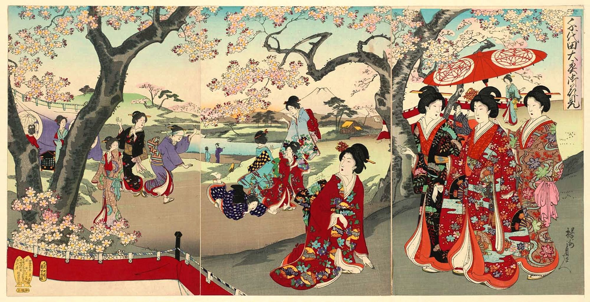

Japan
Geschiedenis
- Stichting van Tokio: Tokio, de hoofdstad van Japan, werd
oorspronkelijk gesticht als Edo in 1457. In 1868, na de
Meiji-restauratie, werd de stad hernoemd naar Tokio, wat "oostelijke
hoofdstad" betekent.
- Periode van isolatie: Van 1633 tot 1853 voerde Japan een beleid van
nationale isolatie, bekend als sakoku. Tijdens deze periode werden
buitenlandse invloeden beperkt en werd het contact met buitenlandse
handelaren en reizigers grotendeels beperkt
- Opening van Japan: In 1853 kwam de Amerikaanse commodore Matthew Perry
met een vloot naar Japan en eiste de opening van de Japanse havens voor
buitenlandse handel. Dit leidde uiteindelijk tot het einde van de
periode van isolatie en de modernisering van Japan.
- Meiji-restauratie: De Meiji-restauratie begon in 1868 en markeerde een
keerpunt in de Japanse geschiedenis. Het was een periode van snelle
modernisering en westerse invloeden, waarin de macht van de keizer werd
hersteld en de feodale heerschappij werd afgeschaft.

- Atoombommen op Hiroshima en Nagasaki: Op 6 augustus 1945 viel de
Verenigde Staten een atoombom op Hiroshima, gevolgd door een tweede
atoombom op Nagasaki op 9 augustus. Deze verwoestende gebeurtenissen
tijdens de Tweede Wereldoorlog leidden uiteindelijk tot de overgave van
Japan.
- Oprichting van de Verenigde Naties: In 1956 werd Japan lid van de
Verenigde Naties. Sindsdien heeft het land een actieve rol gespeeld in
internationale aangelegenheden en bijgedragen aan vredesoperaties en
humanitaire inspanningen over de hele wereld.
- Hoge levensverwachting: Japan staat bekend om zijn hoge
levensverwachting. Volgens gegevens van de Wereldgezondheidsorganisatie
(WHO) had Japan in 2020 de hoogste gemiddelde levensverwachting ter
wereld, met ongeveer 84,6 jaar.
- Technologische vooruitgang: Japan is een wereldleider op het gebied
van technologie en innovatie. Het heeft bijgedragen aan de ontwikkeling
van geavanceerde elektronica, auto's, robots en high-speed treinen, om
er maar een paar te noemen.